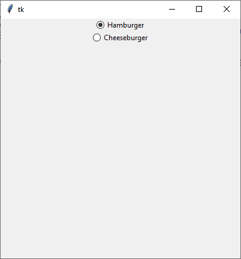

ttk.Radiobutton
ttk.Radiobutton erzeugen
rb = ttk.Radiobutton(parent, Optionen)
| Optionsname | Beschreibung |
|---|---|
| command | Callback, wird bei sich änderdem Status aufgerufen |
| value | Radiobutton-Wert |
| variable | Variable, die den Wert des ausgewählten Radiobuttons hält. Eine gemeinsame Variable für mehrere Radiobuttons definiert die Buttongroup |
ttk.Radiobutton kennt die Standardoptionen: class_, compound, cursor, image, state, style, takefocus, text, textvariable, underline und width
Das folgende Programm stellt zwei Radiobuttons bereit und reagiert auf Knopfdruck:
import tkinter as tk
from tkinter import ttk
from tkinter import font
class A(tk.Tk):
def __init__(self):
super().__init__()
self.geometry('400x400')
self._createWidgets()
def _createWidgets(self):
self.intVar = tk.IntVar(value='1')
rb1 = ttk.Radiobutton(self, text='Hamburger', value=1,
variable=self.intVar, command=self._onClick)
rb1.pack()
rb2 = ttk.Radiobutton(self, text='Cheeseburger', value=2,
variable=self.intVar, command=self._onClick)
rb2.pack()
def _onClick(self):
print('Wahl:', self.intVar.get())
if __name__ == '__main__':
window = A()
window.mainloop()Methoden
- ttk.Radiobutton kennt die Methode
rb.invoke(): Ruft die zum Button gehörende Callback auf, Selektiert/Deselektiert den Button. - Konfigurationsmethoden:
cget(…)undconfigure(…) - Sonstige Methoden:
identify(…),instate(…)undstate(…)
Toolbutton
Für eine schnelle Style-variante ohne Rahmen und Indikator kann man auf Toolbutton
zurückgreifen. Hier die zwei Styles im Vergleich:
import tkinter as tk
from tkinter import ttk
from tkinter import font
class A(tk.Tk):
def __init__(self):
super().__init__()
self.geometry('400x400')
self._createWidgets()
def _createWidgets(self):
self.intVar = tk.IntVar(value='1')
rb1 = ttk.Radiobutton(self, text='Hamburger', value=1,
variable=self.intVar, command=self._onClick)
rb1.pack()
rb2 = ttk.Radiobutton(self, text='Cheeseburger', value=2,
variable=self.intVar, command=self._onClick,
style='Toolbutton')
rb2.pack()
def _onClick(self):
print('Wahl:', self.intVar.get())
if __name__ == '__main__':
window = A()
window.mainloop()